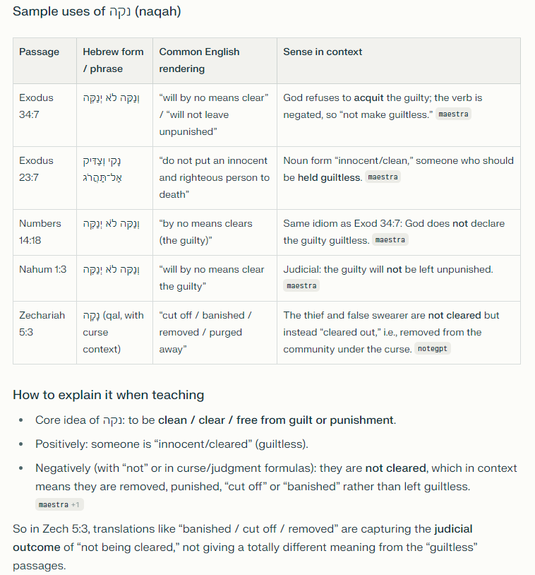

Happy Super Bowl Day! In honor of a Brothers group member, I'm rooting for the Seahawks this year — even though they took the spot I was holding for my 49ers.
Between kickoff prep, I got some help digging into a word from our lesson this week: Zechariah 5:3, part of the vision of the flying scroll that curses "everyone who steals" and "everyone who swears falsely." The verse pivots on the Hebrew word naqah (נקה) — usually translated "clean," "innocent," or "acquitted." What struck me is how the same root shows up again and again across Scripture, almost always wrestling with the same question: can the guilty ever truly be declared clean?

Lay the passages side by side and a pattern emerges. In Exodus 34:7, God is described as forgiving iniquity, transgression, and sin, yet He "will by no means clear (naqah) the guilty" — the sin still has to be dealt with, not simply waved away. Exodus 23:7 commands Israel's judges never to acquit (naqah) the guilty for a bribe — justice can't be purchased. Numbers 14:18 repeats the Exodus 34 language almost verbatim after the spies' report, showing God's patience has limits even while His mercy is real. Nahum 1:3 applies the same word to Nineveh: the Lord is slow to anger, but "will not leave the guilty unpunished (naqah)." And then Zechariah 5:3 lands on a specific covenant community, pronouncing the same curse-word over thieves and false swearers within Judah itself.
What ties it all together is that naqah is never about God being lenient. It's about whether the debt has actually been paid. Every other place this word shows up, God is either refusing to pretend guilt was innocence, or promising that He eventually would not let sin go unaddressed. That's exactly why Zechariah's flying scroll is such an unsettling image — a curse actively searching out the thief's house and the false swearer's house, entering in and consuming it "with its timber and stones" (5:4).
And that's exactly why the gospel is such good news. The New Testament never claims God relaxed His standard for naqah — it claims the debt got paid somewhere else, on a cross, so that what looked impossible in Exodus 34 (mercy without pretending) actually happened. God didn't lower the bar. He met it Himself.